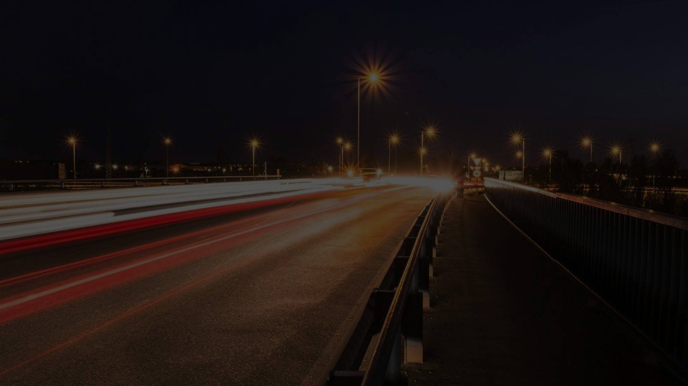
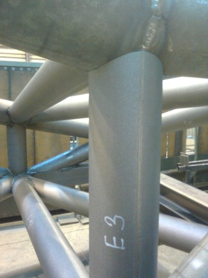
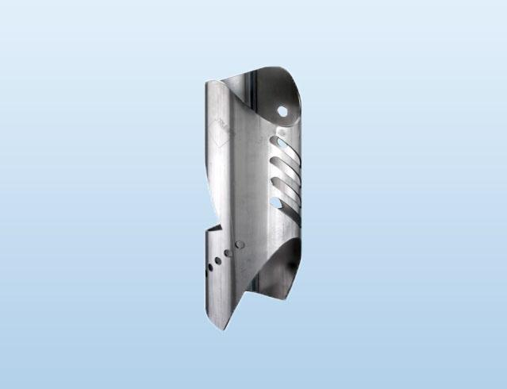
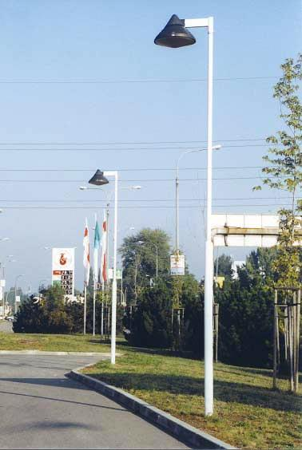
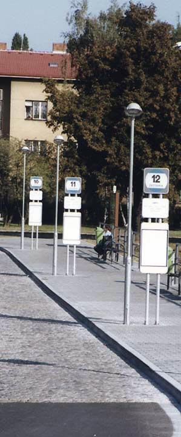

Vývoj, výroba a prodej stožárů s 3D laserovým dělením
Jsme tradičním českým výrobcem stožárů veřejného osvětlení a trakčních sloupů. Disponujeme moderními laserovými centry TRUMPF, tříosým 3D dělením trubek pro mosty a příhradové konstrukce a špičkovým CNC ohraňováním.

Vlastní vývoj, projekce a precizní zpracování v areálu Prostějov.
Laserové řezání profilů ve třech osách pro příhradové nosníky a střechy.
Pálení plechů a CNC ohraňování na prémiových zařízeních TruLaser a TruBend.
Komplexní zpracování oceli a nerezových materiálů
Od prvotního dělení materiálu až po finální svařování a povrchovou úpravu. Každá zakázka vzniká pod přísnou kontrolou rozměrové přesnosti.
3D tvarové dělení trubek a profilů
Laserové dělení ve třech osách určené především pro mostní stavby, střechy a prostorové konstrukce. Zajišťujeme přesné prostorové průniky trubek pro příhradové nosníky s garancí dokonalého spasování bez nutnosti ručního dobrušování.
- Tříosé prostorové řezání trubek a uzavřených profilů
- Komplexní průnikové řešení pro mostní konstrukce a stadiony
- Eliminace rozměrových odchylek při následném svařování

Laserové řezání plechů TRUMPF
Dělení, řezání a pálení kovových desek moderním laserem TRUMPF garantuje maximální čistotu řezu, nulové tepelné deformace a vysokou rychlost zpracování.

CNC ohraňování a tváření plechů
Přesné ohýbání dílců na CNC ohraňovacích lisech. Zajišťujeme výrobu profilovaných skořepin stožárů, polygonálních tvarů i atypických ohýbaných komponent.


Svařování Fe-Cr, Cu, Al a nerez materiálů
Vysoká pevnost a dlouhá životnost stožárů je zajištěna certifikovanými svářečskými postupy. Svařujeme konstrukční oceli, chromové nerezavějící materiály, měď i hliníkové slitiny.
- Svařování ocelí, mědi, hliníku i nerez materiálů
- Podélné i obvodové svary stožárových těl a přírub
- Příprava pro žárové zinkování a komaxitové nátěry
Bento katalog výrobních řad
Klikněte na kategorii a prozkoumejte technické parametry a možnosti zakázkového provedení.
Stožáry veřejného osvětlení (VO)
Vyrábíme ucelený sortiment osvětlovacích stožárů pro města, obce, průmyslové zóny a komunikace. Nabízíme kuželové, stupňovité i polygonální provedení s přírubovým či vetknutým ukotvením.
Trakční, železniční a dálniční sloupy
Robustní ocelové stožáry dimenzované na vysoké dynamické zatížení trolejového vedení, dálničního nasvětlení a telekomunikačních zařízení.
Prostorové tvarové řezání trubek laserem
Revoluční metoda přípravy trubkových dílců pro mosty, zastřešení stadionů a architektonické konstrukce. Laser řeže prostorové křivky průniků ve třech osách s absolutní opakovatelností.
Laserové pálení TRUMPF TruLaser
Průmyslové pálení plechů na prémiových zařízeních německé značky TRUMPF. Poskytujeme komplexní zakázkovou výrobu výpalků od kusových prototypů po sériové zakázky.
Spojte se s výrobním týmem FOR ELV
Rádi zodpovíme vaše technické dotazy a zpracujeme cenovou a termínovou kalkulaci na základě vašeho zadání.
Tradiční český výrobce stožárů a zakázková kovovýroba